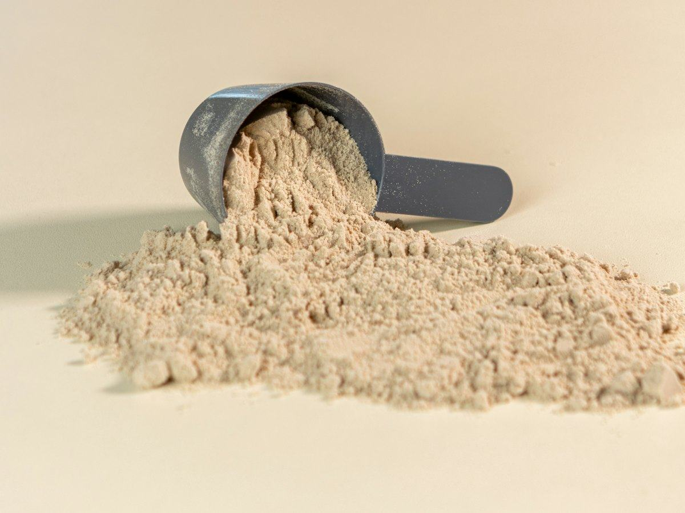
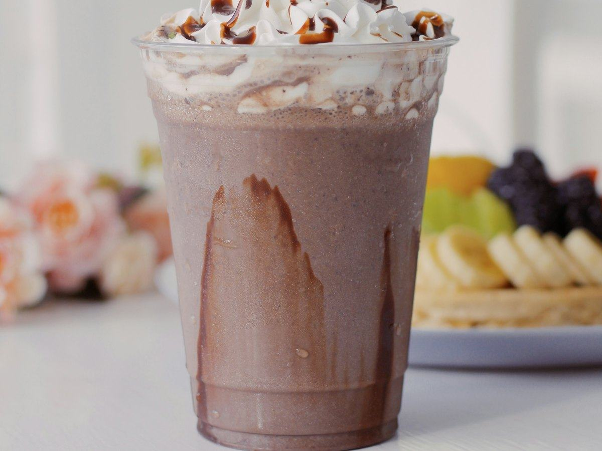
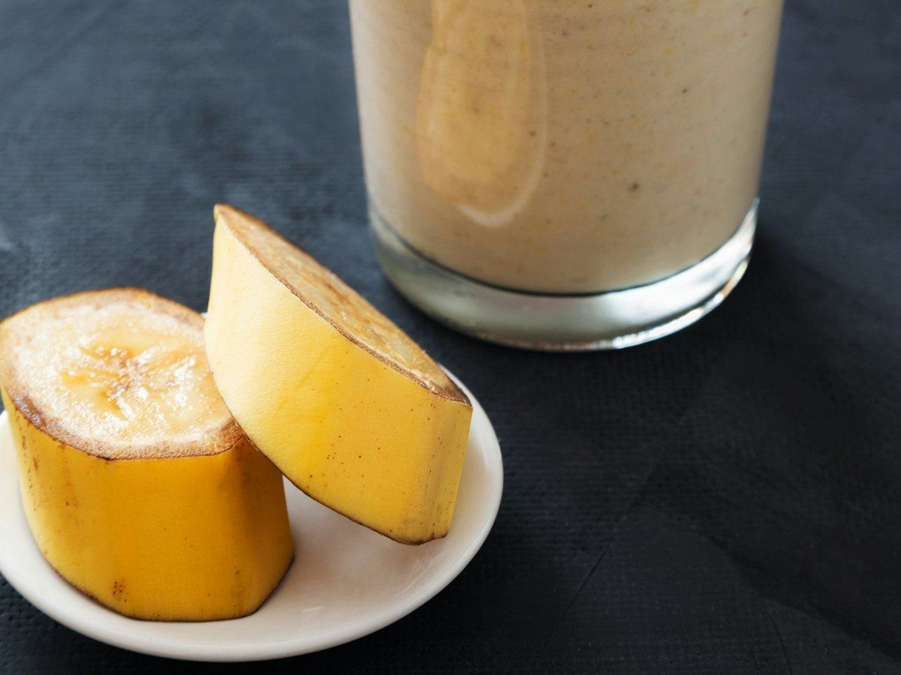
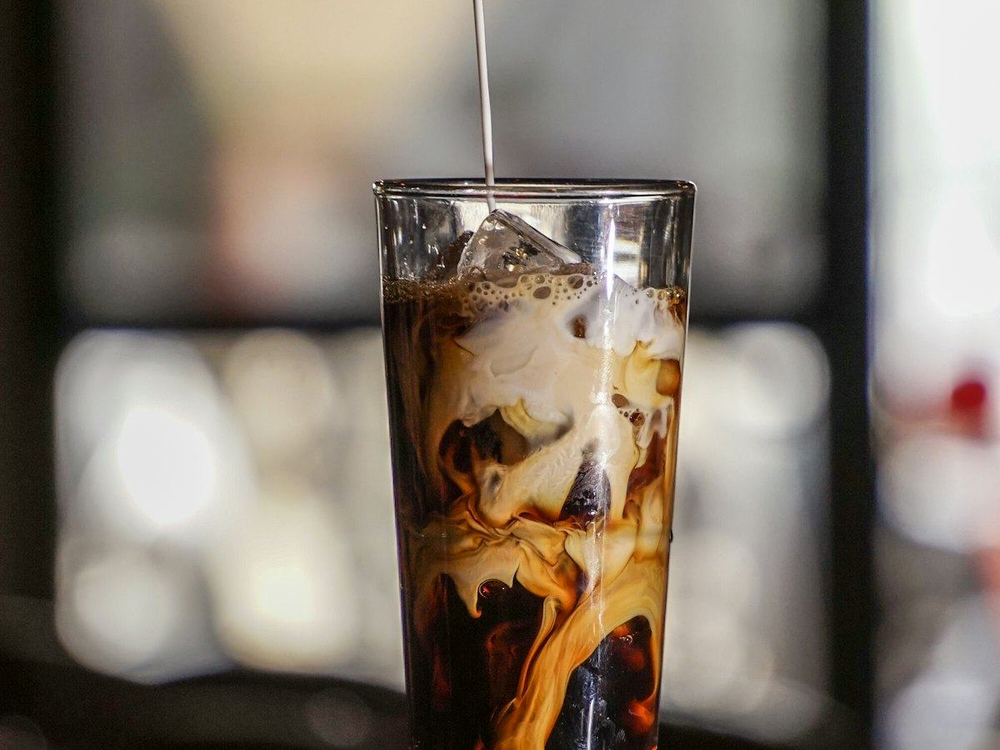
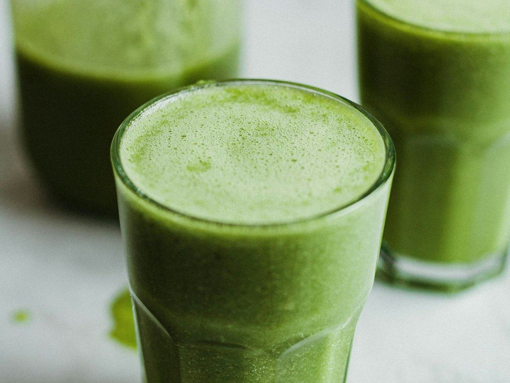

Recetas
5 desayunos saludables y altos en proteína para empezar el día
Pan con tomate y pavo, gachas de avena, overnight oats, huevos revueltos y tortitas de avena. Desayunos fáciles con su información nutricional.
 Por el equipo editorial de Pombo AI
Por el equipo editorial de Pombo AI
12 nov 2026 · 7 min de lectura

Un batido es la forma más rápida de desayunar con proteína o de recuperar después de entrenar. Aquí tienes cinco recetas caseras, con y sin proteína en polvo, cada una con su tabla nutricional.
Sobre la proteína en polvo: usamos los valores de la proteína de suero (whey) de la base del USDA. Cada marca es distinta, así que revisa la etiqueta de la tuya. Si tienes una enfermedad renal, consulta antes con tu médico.

Sabe a batido de chocolate de los de toda la vida, pero con mucha proteína y sin azúcar añadido.
| Proteínas | 35 g | 42 % |
|---|---|---|
| Hidratos de carbono | 43 g | 52 % |
| Grasas | 2 g | 6 % |
| Fibra | 7 g |
El % indica de dónde viene la energía del plato.
Uno de los batidos con más proteína de la lista gracias al suero de leche, con los hidratos justos del plátano. Ideal después de entrenar.

Si no tienes proteína en polvo, el yogur griego desnatado hace el trabajo. Cremoso y fresco.
| Proteínas | 27 g | 39 % |
|---|---|---|
| Hidratos de carbono | 37 g | 53 % |
| Grasas | 3 g | 8 % |
| Fibra | 5 g |
El % indica de dónde viene la energía del plato.
Demuestra que no hace falta suplemento: el yogur griego desnatado aporta mucha proteína con muy poca grasa, y las fresas y la avena suman fibra.

El más energético: perfecto para días de entrenamiento fuerte o si te cuesta llegar a tus calorías.
| Proteínas | 38 g | 27 % |
|---|---|---|
| Hidratos de carbono | 63 g | 44 % |
| Grasas | 18 g | 29 % |
| Fibra | 8 g |
El % indica de dónde viene la energía del plato.
Mucha energía en un vaso: proteína del suero y la leche, hidratos de la avena y el plátano, y grasas de la crema de cacahuete. Útil si quieres ganar peso.

Desayuno y café en uno. Para quien no tiene hambre por la mañana pero quiere empezar con proteína.
| Proteínas | 31 g | 64 % |
|---|---|---|
| Hidratos de carbono | 15 g | 30 % |
| Grasas | 1 g | 6 % |
| Fibra | 3 g |
El % indica de dónde viene la energía del plato.
Muy pocas calorías para la proteína que da, porque casi todo viene del suero y la leche desnatada. Ojo con la cafeína si eres sensible a ella.

Verde por fuera, dulce por dentro: el plátano y el kiwi tapan el sabor de las espinacas.
| Proteínas | 23 g | 28 % |
|---|---|---|
| Hidratos de carbono | 50 g | 60 % |
| Grasas | 5 g | 12 % |
| Fibra | 9 g |
El % indica de dónde viene la energía del plato.
El más rico en fibra de todos gracias a la fruta, las espinacas y la chía, con la proteína del yogur griego. Una forma fácil de sumar verdura al día.
Cómo calculamos los valores: sumamos los ingredientes con la base pública del USDA (FoodData Central, SR Legacy) y dividimos entre las raciones. Son aproximaciones: cambian según la marca, el tamaño y la cocción. Los sellos "fuente de" y "alta en" siguen los criterios del Reglamento (CE) 1924/2006. Para saber lo que comes de verdad, haz una foto a tu plato con Pombo AI.
¿Cuánto comes de verdad?
Con Pombo AI haces una foto a tu plato y la inteligencia artificial estima calorías, proteínas, hidratos y grasas en segundos. Es una estimación orientativa, no un dato médico.
No. Es una forma cómoda de sumar proteína, pero se puede conseguir con alimentos como el yogur griego, la leche o los huevos. El batido de fresa de este artículo no lleva proteína en polvo.
Puede servir como desayuno, merienda o después de entrenar. Lo importante es la cantidad de proteína que tomas en el día. En el artículo sobre ganar masa muscular explicamos cuánta se recomienda.
Aviso: Este artículo es informativo y no sustituye el consejo de un médico o dietista-nutricionista. Si tienes una enfermedad, tomas medicación, estás embarazada o has tenido un trastorno de la conducta alimentaria, consulta con un profesional antes de cambiar tu alimentación.
Pan con tomate y pavo, gachas de avena, overnight oats, huevos revueltos y tortitas de avena. Desayunos fáciles con su información nutricional.
Bacalao en salsa verde, al horno con verduras y en ensalada con garbanzos. Tres recetas fáciles con calorías, proteínas e hidratos por ración.
Cinco recetas fáciles con verdura, legumbres y proteína para comer mejor si tienes sobrepeso. Con calorías, proteínas, hidratos y grasas por ración.